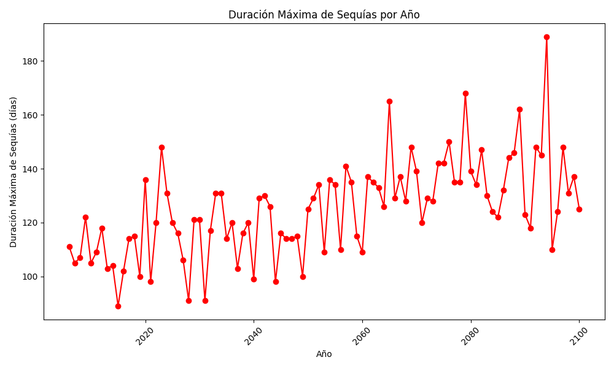

Duración Máxima de Sequías

Este gráfico identifica el período continuo más largo sin precipitaciones significativas (días secos) en un año.
Es importante para comprender los efectos de las sequías en el medio ambiente y en la economía. Además, ayuda a planificar la gestión de recursos hídricos y la agricultura.